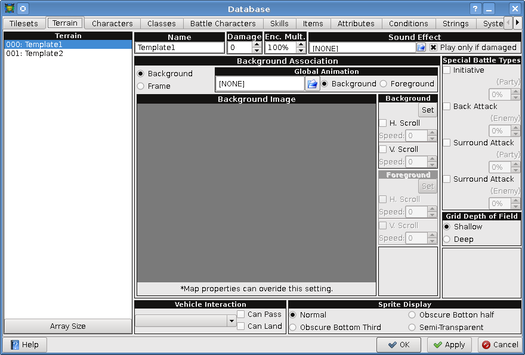

[User Interfaces]->[Database]->[Terrain Tab]

- Terrain:
-
This is the list of available terrain. Clicking on one will display its properties to the right.
You can also click on the "Array Size" button to change the number of terrain.
- Name:
- The name of the current terrain, changing this will change the current terrain's name.
- Damage:
- This is the damage per step that the player takes while walking on this terrain.
- Enc. Mult.:
- This is a percent based modification of a map's monster encounter rate.
- Sound Effect:
- The sound effect to be played when the player walks on this terrain.
- Background Association:
- Sets the battle background to be just a background image, or a frame.
- Background Association -> Global Animation:
- Sets the global animation to play over the battle screen, and whether it plays in the foreground or background.
- Background Association -> Background Image:
- This is a preview of the background image (plus foreground image if available).
- Background Association -> Background:
- Set the background image and optionally set a horizontal and/or vertical scrolling speed.
- Background Association -> Foreground:
- Set the foreground image (only if background association is a frame) and optionally set a horizontal and/or vertical scrolling speed.
- Special Battle Types:
- Set the percent chance of each type.
- Special Battle Types -> Initiative (Party):
- Chance that the characters will attack first.
- Special Battle Types -> Back Attack (Enemy):
- Chance that the monsters are attacking the characters from behind.
- Special Battle Types -> Surround Attack (Party):
- Chance that the party surrounded the monsters.
- Special Battle Types -> Surround Attack (Enemy):
- Chance that the monsters surrounded the players.
- Grid Depth of Field:
- Sets the grid depth of battles to either shallow (monsters are far apart), or deep (monsters are closer together).
- Vehicle Interaction:
-
Changes each individual vehicles behavior for this terrain, allowing it to pass/land.
NOTE: The vehicles are not yet implemented, so this feature does nothing at the moment.
- Sprite Display:
- Changes the rendering of sprites that are standing on this terrain.
- Sprite Display -> Normal:
- Sprite is renedered normaly.
- Sprite Display -> Obscure Bottom Half:
- Top half of sprite is rendered normaly, while the bottom half is semi-transparent (50% transparency).
- Sprite Display -> Obscure Bottom Third:
- Top two thirds of sprite is rendered normaly, while the bottom third is semi-transparent (50% transparency).
- Sprite Display -> Semi-Transparent:
- The whole sprite is rendered semi-transparently (50% transparency).